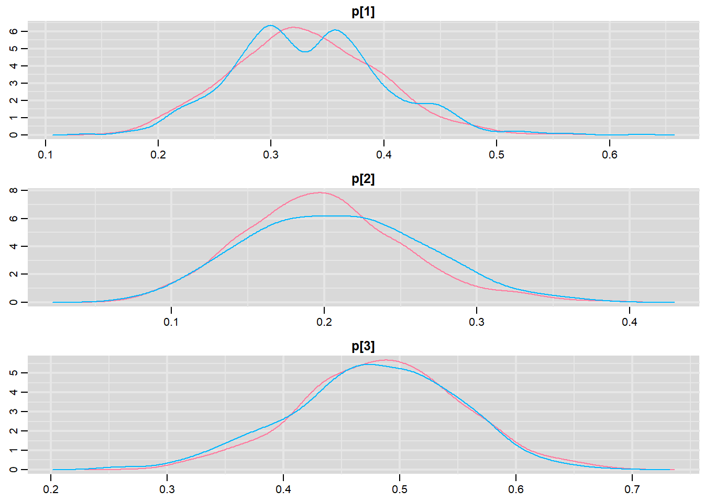
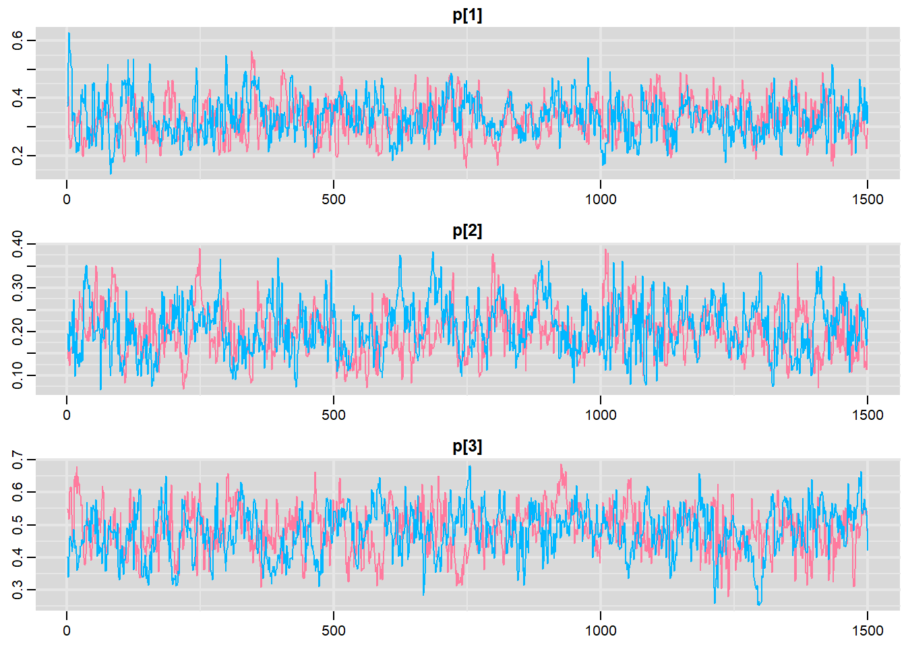
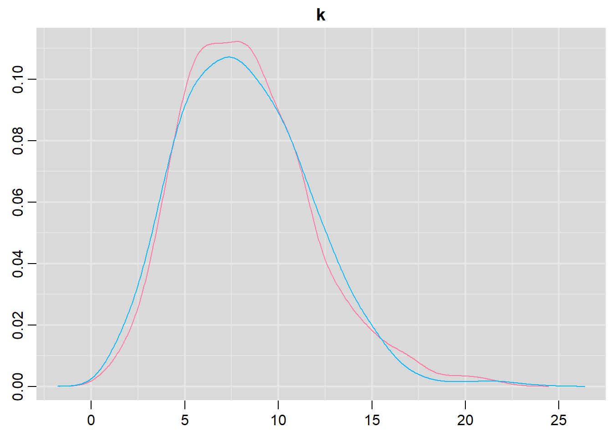
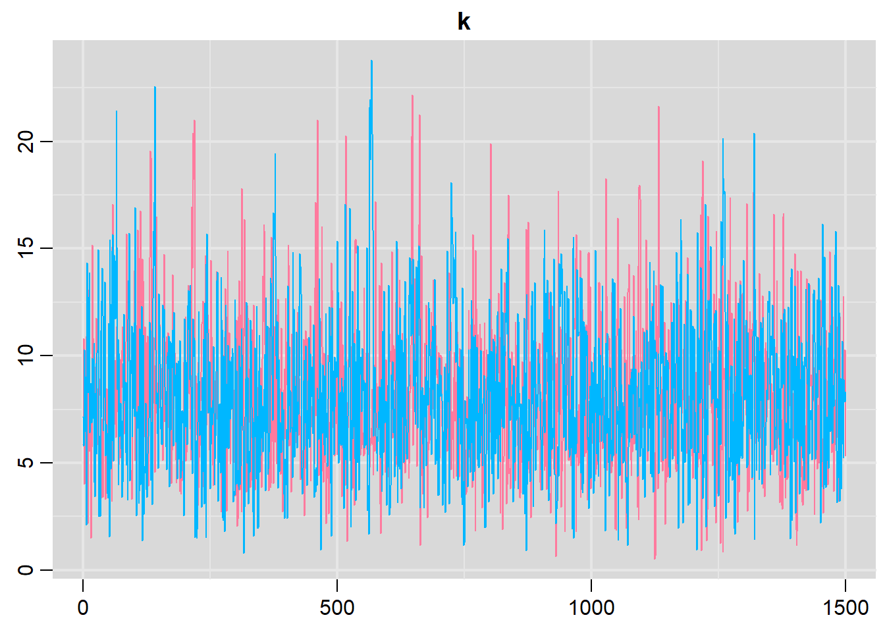

![]()
#the observed frequences of A and B
obs <- c(15,9,23)
obsNA [1] 15 9 23This tutorial will focus on the use of Bayesian estimation to fit simple linear regression models …
Software, Statistics, Stan
This tutorial will focus on the use of Bayesian estimation to fit simple linear regression models. BUGS (Bayesian inference Using Gibbs Sampling) is an algorithm and supporting language (resembling R) dedicated to performing the Gibbs sampling implementation of Markov Chain Monte Carlo (MCMC) method. Dialects of the BUGS language are implemented within three main projects:
OpenBUGS - written in component pascal.
JAGS - (Just Another Gibbs Sampler) - written in C++.
STAN - a dedicated Bayesian modelling framework written in C++ and implementing Hamiltonian MCMC samplers.
Whilst the above programs can be used stand-alone, they do offer the rich data pre-processing and graphical capabilities of R, and thus, they are best accessed from within R itself. As such there are multiple packages devoted to interfacing with the various software implementations:
R2OpenBUGS - interfaces with OpenBUGS
R2jags - interfaces with JAGS
rstan - interfaces with STAN
This tutorial will demonstrate how to fit models in JAGS (Plummer (2004)) using the package R2jags (Su et al. (2015)) as interface, which also requires to load some other packages.
The analyses described in previous tutorials have all involved response variables that implicitly represent normally distributed and continuous population responses. In this context, continuous indicates that (at least in theory), any value of measurement down to an infinite number of decimal places is possible. Population responses can also be categorical such that the values could be logically or experimentally constrained to a set number of discrete possibilities. For example, individuals in a population can be categorized as either male or female, reaches in a stream could be classified as either riffles, runs or pools and salinity levels of sites might be categorized as either high, medium or low. Typically, categorical response variables are tallied up to generate the frequency of replicates in each of the possible categories. From above, we would tally up the frequency of males and females, the number of riffles, runs and pools and the high, medium and low salinity sites. Hence, rather than model data in which a response was measured from each replicate in the sample (as was the case for previous analyses in this series), frequency analyses model data on the frequency of replicates in each possible category. Furthermore, frequency data follow a Poisson distribution rather than a normal distribution. The Poisson distribution is a symmetrical distribution in which only discrete integer values are possible and whose variance is equal to its mean.
Since the mean and variance of a Poisson distribution are equal, distributions with higher expected values are shorter and wider than those with smaller means. Note that a Poisson distribution with an expected less than less than \(5\) will be obviously asymmetrical as a Poisson distribution is bounded to the left by zero. This has important implications for the reliability of frequency analyses when sample sizes are low. The frequencies expected for each category are determined by the size of the sample and the nature of the (null) hypothesis. For example, if the null hypothesis is that there are three times as many females as males in a population (ratio of \(3:1\)), then a sample of \(110\) individuals would be expected to yield \(0.75\times110=82.5\) females and \(0.25\times110=27.5\) males.
The degree of difference between the observed (o) and expected (e) sample category frequencies is represented by the chi-square (\(\chi^2\)) statistic.
\[ \chi^2=\sum\frac{(o-e)^2}{e}. \]
This is a relative measure that is standardised by the magnitude of the expected frequencies. When the null hypothesis is true (typically this represents the situation when there are no effects or patterns of interest in the population response category frequencies), and we have sampled in an unbiased manner, we might expect the observed category frequencies in the sample to be very similar (if not equal) to the expected frequencies and thus, the chi-square value should be close to zero. Likewise, repeated sampling from such a population is likely to yield chi-square values close to zero and large chi-square values should be relatively rare. As such, the chi-square statistic approximately follows a \(\chi^2\) distribution, a mathematical probability distribution representing the frequency (and thus probability) of all possible ranges of chi-square statistics that could result when the null hypothesis is true.
The \(\chi^2\) distribution is defined as:
\[ p(x) = \frac{1}{2^{\frac{n}{2}}\gamma(\frac{n}{2})}x^{\frac{n}{2-1}}e^{-\frac{x}{2}}. \]
Note that the location AND shape are both determined by a single parameter (the sample size, n which is also equal to the degrees of freedom \(+ 1\)). The \(\chi^2\) distribution is an asymmetrical distribution bounded by zero and infinity and whose exact shape is determined by the degrees of freedom (calculated as the total number of categories minus \(1\)). Note also that the peak of a chi-square distribution is not actually at zero (although it does approach it when the degrees of freedom is equal to zero). Initially, this might seem counter intuitive. We might expect that when a null hypothesis is true, the most common chi-square value will be zero. However, the \(\chi^2\) distribution takes into account the expected natural variability in a population as well as the nature of sampling (in which multiple samples should yield slightly different results). The more categories there are, the more likely that the observed and expected values will differ. It could be argued that when there are a large number of categories, samples in which all the observed frequencies are very close to the expected frequencies are a little suspicious and may represent dishonesty on the part of the researcher (Indeed the extraordinary conformity of Gregor Mendel’s pea experiments have been subjected to such skepticism).
By comparing any given sample chi-square statistic to its appropriate \(\chi^2\) distribution, the probability that the observed category frequencies could have be collected from a population with a specific ratio of frequencies (for example \(3:1\)) can be estimated. As is the case for most hypothesis tests, probabilities lower than \(0.05\) (\(5\)%) are considered unlikely and suggest that the sample is unlikely to have come from a population characterized by the null hypothesis. Chi-squared tests are typically one-tailed tests focusing on the right-hand tail as we are primarily interested in the probability of obtaining large chi-square values. Nevertheless, it is also possible to focus on the left-hand tail so as to investigate whether the observed values are “too good to be true”.
A chi-square statistic will follow a \(\chi^2\) distribution approximately provided that:
All observations are classified independently of one another. The classification of one replicate should not be influenced by or related to the classification of other replicates. Random sampling should address this.
No more than \(20\)% of the expected frequencies are less than five. \(\chi^2\) distributions do not reliably approximate the distribution of all possible chi-square values under those circumstances (Expected frequencies less than five result in asymmetrical sampling distributions (since they must be truncated at zero) and thus potentially unrepresentative χ2 distributions). Since the expected values are a function of sample sizes, meeting this assumption is a matter of ensuring sufficient replication. When sample sizes or other circumstances beyond control lead to a violation of this assumption, numerous options are available.
Homogeneous frequencies tests
Homogeneous frequencies tests (often referred to as goodness of fit tests) are used to test null hypotheses that the category frequencies observed within a single variable could arise from a population displaying a specific ratio of frequencies. The null hypothesis (\(H_0\)) is that the observed frequencies come from a population with a specific ratio of frequencies.
Distributional conformity - Kolmogorov-Smirnov tests
Strictly, goodness of fit tests are used to examine whether a frequency/sampling distribution is homogeneous with some declared distribution. For example, we might use a goodness of fit test to formally investigate whether the distribution of a response variable deviates substantially from a normal distribution. In this case, frequencies of responses in a set of pre-defined bin ranges are compared to those frequencies expected according to the mathematical model of a normal distribution. Since calculations of these expected frequencies also involve estimates of population mean and variance (both required to determine the mathematical formula), a two degree of freedom loss is incurred (hence \(df=n−2\)).
Contingency tables are used to investigate the associations between two or more categorical variables. That is, they test whether the patterns of frequencies in one categorical variable differ between different levels of other categorical variable(s) or ould the variables be independent of another. In this way, they are analogous to interactions in factorial linear models (such as factorial ANOVA). Contingency tables test the null hypothesis (\(H_0\)) that the categorical variables are independent of (not associated with) one another. Note that analyses of contingency tables do not empirically distinguish between response and predictor variables (analogous to correlation), yet causality can be implied when logical and justified by interpretation. As an example, contingency tables could be used to investigate whether incidences of hair and eye color in a population are associated with one another (is one hair color type more commonly observed with a certain eye color). In this case, neither hair color nor eye color influence one another, their incidences are both controlled by a separate set of unmeasured factors. By contrast, an association between the presence or absence of a species of frog and the level of salinity (high, medium or low) could imply that salinity effects the distribution of that species of frog - but not vice versa. Sample replicates are cross-classified according to the levels (categories) of multiple categorical variables. The data are conceptualized as a table (hence the name) with the rows representing the levels of one variable and the column the levels of the other variable(s) such that the cells represent the category combinations. The expected frequency of any given cell is calculated as:
\[ \frac{\text{(row total)} \times \text{(column total)}}{\text{(grand total)}}. \]
Thereafter, the chi-square calculations are calculated as described above and the chi-square value is compared to a \(\chi^2\) distribution with \((r−1)(c−1)\) degrees of freedom. Contingency tables involving more than two variables have multiple interaction levels and thus multiple potential sources of independence. For example, in a three-way contingency table between variables A, B and C, there are four interactions (A:B, A:C, B:C and A:B:C). Such designs are arguably more appropriately analysed using log-linear models.
Odds ratios
The chi-square test provides an indication of whether or not the occurrences in one set of categories are likely to be associated with other sets of categories (an interaction between two or more categorical variables), yet does not provide any indication of how strongly the variables are associated (magnitude of the effect). Furthermore, for variables with more than two categories (e.g. high, medium, low), there is no indication of which category combinations contribute most to the associations. This role is provided by odds ratios which are essentially a measure of effect size. Odds refer the likelihood of a specific event or outcome occurring (such as the odds of a species being present) versus the odds of it not occurring (and thus the occurrence of an alternative outcome) and are calculated as \(\frac{\pi_j}{(1-\pi_j)}\) where \(\pi_j\) refers to the probability of the event occurring. For example, we could calculate the odds of frogs being present in highly saline habitats as the probability of frogs being present divided by the probability of them being absent. Similarly, we could calculate the likelihood of frog presence (odds) within low salinity habitats. The ratio of two of these likelihoods (odds ratio) can then be used to compare whether the likelihood of one outcome (frog presence) is the same for both categories (salinity levels). For example, is the likelihood of frogs being present in highly saline habitats the same as the probability of them being present in habitats with low levels of salinity. In so doing, the odds ratio is a measure of effect size that describes the strength of an association between pairs of cross-classification levels. Although odds and thus odds ratios (\(\theta\)) are technically derived from probabilities, they can also be estimated using cell frequencies (\(n\)).
\[ \theta = \frac{n_{11}n_{22}}{n_{12}n_{21}} \]
or alternatively
\[ \theta = \frac{(n_{11}+0.5)(n_{22}+0.5)}{(n_{12} + 0.5)(n_{21} + 0.5)} \]
where \(0.5\) is a small constant added to prevent division by zero. An odds ratio of one indicates that the event or occurrence (presence of frogs) is equally likely in both categories (high and low salinity habitats). Odds ratios greater than one signify that the event or occurrence is more likely in the first than second category and vice verse for odds ratios less than one. For example, when comparing the presence/absence of frogs in low versus high salinity habitats, an odds ratio of \(5.8\) would suggest that frogs are \(5.8\) times more likely to be present in low salinity habitats than those that highly saline. The distribution of odds ratios (which range from \(0\) to \(\infty\)) is not symmetrical around the null position (\(1\)) thereby precluding confidence interval and standard error calculations. Instead, these measures are calculated from log transformed (natural log) odds ratios (the distribution of which is a standard normal distribution centered around \(0\)) and then converted back into a linear scale by anti-logging. Odds ratios can only be calculated between category pairs from two variables and therefore \(2 \times 2\) contingency tables (tables with only two rows and two columns). However, tables with more rows and columns can be accommodate by splitting the table up into partial tables of specific category pair combinations. Odds ratios (and confidence intervals) are then calculated from each pairing, notwithstanding their lack of independence. For example, if there were three levels of salinity (high, medium and low), the odds ratios from three partial tables (high vs medium, high vs low, medium vs low) could be calculated.
Since odds ratios only explore pairwise patterns within two-way interactions, odds ratios for multi-way (three or more variables) tables are considerably more complex to calculate and interpret. Partial tables between two of the variables (e.g frog presence/absence and high/low salinity) are constructed for each level of a third (season: summer/winter). This essentially removes the effect of the third variable by holding it constant. Associations in partial tables are therefore referred to as conditional associations - since the outcomes (associated or independent) from each partial table are explicitly conditional on the level of the third variable at which they were tested.
Specific contributions to a lack of independence (significant associations) can also be investigated by exploring the residuals. Recall that residuals are the difference between the observed values (frequencies) and those predicted or expected when the null hypothesis is true (no association between variables). Hence the magnitude of each residual indicates how much each of the cross classification combinations differs from what is expected. The residuals are typically standardized (by dividing by the square of the expected frequencies) to enable individual residuals to be compared relative to one another. Large residuals (in magnitude) indicate large deviations from what is expected when the null hypothesis is true and thus also indicate large influences (contributions) to the overall association. The sign (\(+\) or \(-\)) of the residual indicates whether the frequencies were higher or lower than expected.
An alternative to the chi-square test for goodness of fit and contingency table analyses is the G-test. The G-test is based on a log likelihood-ratio test. A log likelihood ratio is a ratio of maximum likelihoods of the alternative and null hypotheses. More simply, a log likelihood ratio test essentially examines how likely (the probability) the alternative hypothesis (representing an effect) is compared to how likely the null hypothesis (no effect) is given the collected data. The G2 statistic is calculated as:
\[ G^2 = 2 \sum o \; ln\frac{o}{e} \]
where o and e are the observed and expected sample category frequencies respectively and ln denotes the natural logarithm (base e). When the null hypothesis is true, the G2 statistic approximately follows a theoretical \(\chi^2\) distribution with the same degrees of freedom as the corresponding chi-square statistic. The G2 statistic (which is twice the value of the log-likelihood ratio) is arguably more appropriate than the chi-square statistic as it is closely aligned with the theoretical basis of the χ2 distribution (for which the chi-squared statistic is a convenient approximation). For large sample sizes, G2 and \(\chi^2\) statistics are equivalent, however the former is a better approximation of the theoretical chi2 distribution when the difference between the observed and expected is less than the expected frequencies (ie \(|o−e|<e\)). Nevertheless, G-tests operate under the same assumptions are the chi-square statistic and thus very small sample sizes (expected values less than \(5\)) are still problematic. G-tests have the additional advantage that they can be used additively with more complex designs and a thus more extensible than the chi-squared statistic.
As discussed previously, both the \(\chi^2\) and G2 statistics are poor approximations of theoretical \(\chi^2\) distributions when sample sizes are very small. Under these circumstances a number of alternative options are available:
If the issue has arisen due to a large number of category levels in one or more of the variables, some categories could be combined together.
Fishers exact test which essentially calculates the probability of obtaining the cell frequencies given the observed marginal totals in \(2 \times 2\) tables. The calculations involved in such tests are extremely tedious as they involve calculating probabilities from hypergeometric distributions (discrete distributions describing the number of successes from sequences of samples drawn with out replacement) for all combinations of cell values that result in the given marginal totals.
Yates’ continuity correction calculates the test statistic after adding and subtracting \(0.5\) from observed values less than and greater than expected values respectively. Yates’ correction can only be applied to designs with a single degree of freedom (goodness-of-fit designs with two categories or \(2 \times 2\) tables) and for goodness-of-fit tests provide p-values that are closer to those of an exact binomial. However, they typically yield over inflated p-values in contingency tables and so have gone out of favour.
Williams’ correction is applied by dividing the test statistic by \(1+(p2−1)6nv\), where \(p\) is the number of categories, \(n\) is the total sample size (total of observed frequencies) and \(v\) is the number of degrees of freedom \((p−1)\). Williams’ corrections can be applied to designs with greater than one degree of freedom, and are considered marginally more appropriate than Yates’ corrections if corrections are insisted.
Randomisation tests in which the sample test statistic (either \(\chi^2\) or G2) is compared to a probability distribution generated by repeatedly calculating the test statistic from an equivalent number of observations drawn from a population (sampling with replacement) with the specific ratio of category frequencies defined by the null hypothesis. Significance is thereafter determined by the proportion of the randomised test statistic values that are greater than or equal to the value of the statistic that is based on observed data.
Log-linear modelling (as a form of generalized linear model)
Goodness of fit tests are concerned with comparing the observed frequencies with those expected on the basis of a specific null hypothesis. So lets now fabricate a motivating scenario and some data. We will create a scenario that involves items classified into one of three groups (A, B and C). The number of items in each classification group are then tallied up. Out of a total of \(47\) items, \(15\) where of type A, \(9\) where of type B and \(23\) where of type C. We could evaluate a parity (a \(1:1:1\) ratio from these data. In a frequentist context, this might involve testing a null hypothesis that the observed data could have come from a population with a \(1:1\) item ratio. In this case the probability would be the probability of obtaining the observed ratio of frequencies when the null hypothesis is true. In a Bayesian context, there are numerous ways that we could tackle these data. We would be evaluating the evidence for the null hypothesis (\(1:1:1\) item ratio) given the observed by estimating the degree of freedom from a chi-square distribution. Alternatively, we could estimate the value of the three population fractions which are expected to be \(1/3, 1/3, 1/3\) when \(1:1:1\). We will explore this option first and then explore the chi-square approach second. To extend the example, lets also explore a \(1:1:2\) ratio. We start by generating the observed data:
#the observed frequences of A and B
obs <- c(15,9,23)
obsNA [1] 15 9 23The binomial distribution represents the distribution of possible densities (probabilities) for the number of successes p out of a total of n independent trials. In this case, it can be used to model the number of items of each group (A, B and C) out of a total of \(47\) items. The prior distribution for \(p_i\) would be a beta distribution (values range from \(0\) to \(1\)) with shape parameters a and b the hyperpriors of which follow vague (flat, imprecise) gamma distributions.
\[ obs_i \sim \text{Bin}(p_i,n_i), \]
where \(p_i\sim \text{Beta}(a,b)\) and \(a,b \sim \text{Gamma}(1,0.01)\).
The data should logically follow a binomial distribution (since the observations are counts of positive events out of a total).
We now translate the likelihood model into JAGS code and store the code in an external file.
modelString="
model {
#Likelihood
for (i in 1:nGroups) {
obs[i] ~ dbin(p[i],n[i])
p[i] ~ dbeta(a[i],b[i])
a[i] ~ dgamma(1,0.01)
b[i] ~ dgamma(1,0.01)
}
}
"
## write the model to a text file
writeLines(modelString,con="chi2model.txt")The likelihood model indicates that the observed counts are modeled by a binomial distribution with a probability of p (fraction) from n trials (items).
The prior on each p is defined as a beta distribution with shape parameters a and b
The hyperpriors for each a and b are drawn from imprecise (vague, flat) gamma distributions.
Define the data list. This all needs to be contained within a list object. We will create two data lists, one for each of the hypotheses.
# The observed item frequencies
obs <- c(15, 9, 23)
data.list <- list(obs = obs, n = c(47, 47, 47), nGroups = 3)
data.listNA $obs
NA [1] 15 9 23
NA
NA $n
NA [1] 47 47 47
NA
NA $nGroups
NA [1] 3Define the parameters to monitor and the chain details
params <- c("p")
nChains = 2
burnInSteps = 1000
thinSteps = 1
numSavedSteps = 5000
nIter = ceiling((numSavedSteps * thinSteps)/nChains)Fit the model in JAGS using the function jags in the package R2jags (which should be loaded first).
library(R2jags)
# Fit the model for the 1:1:1 ratio
data.r2jags <- jags(data = data.list, inits = NULL, parameters.to.save = params,
model.file = "chi2model.txt",n.chains = nChains, n.iter = nIter,
n.burnin = burnInSteps, n.thin = thinSteps)NA Compiling model graph
NA Resolving undeclared variables
NA Allocating nodes
NA Graph information:
NA Observed stochastic nodes: 3
NA Unobserved stochastic nodes: 9
NA Total graph size: 18
NA
NA Initializing modelprint(data.r2jags)NA Inference for Bugs model at "chi2model.txt", fit using jags,
NA 2 chains, each with 2500 iterations (first 1000 discarded)
NA n.sims = 3000 iterations saved
NA mu.vect sd.vect 2.5% 25% 50% 75% 97.5% Rhat n.eff
NA p[1] 0.331 0.066 0.209 0.286 0.329 0.373 0.465 1.002 1500
NA p[2] 0.204 0.056 0.104 0.164 0.201 0.240 0.323 1.009 220
NA p[3] 0.481 0.070 0.337 0.436 0.482 0.529 0.614 1.006 390
NA deviance 15.201 2.387 12.516 13.432 14.568 16.297 21.137 1.010 180
NA
NA For each parameter, n.eff is a crude measure of effective sample size,
NA and Rhat is the potential scale reduction factor (at convergence, Rhat=1).
NA
NA DIC info (using the rule, pD = var(deviance)/2)
NA pD = 2.8 and DIC = 18.0
NA DIC is an estimate of expected predictive error (lower deviance is better).Conclusions: Initially, we should focus our attention on the Rhat and n.eff columns. These are the scale reduction and number of effective samples respectively and they provide an indication of the degree of mixing or coverage of the samples. Ideally, the n.eff values should be approximately equal to the number of saved samples (in this case \(4701\)), and the Rhat values should be approximately \(1\) (complete convergence). Whilst the actual values are likely to differ substantially from run to run (due to the stochastic nature of the way the chains traverse the posterior distribution), on this occasion, the n.eff of the first two probability parameters (p[1] and p[2]) are substantially lower than \(4700\). Hence, the samples of these parameters may not accurately reflect the posterior distribution. We might consider altering one or more of the chain behavioural paramters (such as the thinning rate), alter the model definition (or priors) itself.
library(mcmcplots)
denplot(data.r2jags, parms = c("p"))
traplot(data.r2jags, parms = c("p"))
raftery.diag(as.mcmc(data.r2jags))NA [[1]]
NA
NA Quantile (q) = 0.025
NA Accuracy (r) = +/- 0.005
NA Probability (s) = 0.95
NA
NA You need a sample size of at least 3746 with these values of q, r and s
NA
NA [[2]]
NA
NA Quantile (q) = 0.025
NA Accuracy (r) = +/- 0.005
NA Probability (s) = 0.95
NA
NA You need a sample size of at least 3746 with these values of q, r and sautocorr.diag(as.mcmc(data.r2jags))NA deviance p[1] p[2] p[3]
NA Lag 0 1.00000000 1.00000000 1.00000000 1.00000000
NA Lag 1 0.69694316 0.77542752 0.81100727 0.81682813
NA Lag 5 0.19279534 0.29798006 0.42995558 0.41561204
NA Lag 10 0.03297520 0.07747643 0.19693603 0.23855095
NA Lag 50 0.01818888 0.03336105 -0.05892592 0.01968776Conclusions: Minimum required number of MCMC samples to ensure that sufficient samples had been collected to achieve good accuracy is \(3746\). We had \(5000\) per chain (\(5000\times3=15000\)).
params <- c("p")
nChains = 2
burnInSteps = 1000
thinSteps = 50
numSavedSteps = 5000
nIter = ceiling((numSavedSteps * thinSteps)/nChains)
data.r2jags <- jags(data = data.list, inits = NULL, parameters.to.save = params,
model.file = "chi2model.txt", n.chains = nChains, n.iter = nIter,
n.burnin = burnInSteps, n.thin = thinSteps)NA Compiling model graph
NA Resolving undeclared variables
NA Allocating nodes
NA Graph information:
NA Observed stochastic nodes: 3
NA Unobserved stochastic nodes: 9
NA Total graph size: 18
NA
NA Initializing modelprint(data.r2jags)NA Inference for Bugs model at "chi2model.txt", fit using jags,
NA 2 chains, each with 125000 iterations (first 1000 discarded), n.thin = 50
NA n.sims = 4960 iterations saved
NA mu.vect sd.vect 2.5% 25% 50% 75% 97.5% Rhat n.eff
NA p[1] 0.327 0.067 0.205 0.279 0.324 0.369 0.466 1.001 5000
NA p[2] 0.205 0.057 0.106 0.162 0.201 0.241 0.327 1.001 5000
NA p[3] 0.491 0.072 0.349 0.442 0.492 0.540 0.631 1.001 5000
NA deviance 15.309 2.420 12.554 13.530 14.691 16.384 21.687 1.001 5000
NA
NA For each parameter, n.eff is a crude measure of effective sample size,
NA and Rhat is the potential scale reduction factor (at convergence, Rhat=1).
NA
NA DIC info (using the rule, pD = var(deviance)/2)
NA pD = 2.9 and DIC = 18.2
NA DIC is an estimate of expected predictive error (lower deviance is better).Conclusions: Rhat and n.eff are now much better for the probability parameters. The estimated fractions for A, B and C are:
A: 0.327 (0.207, 0.466)
B: 0.200 (0.104, 0.323)
C: 0.491 (0.355, 0.625)
Collectively, the fractions of 1/3, 1/3 and 1/3 do not fall within these ranges. However, collectively the fractions 1/4, 1/4, 2/4 do fall comfortably within these ranges. This suggests that the population ratio is more likely to be 1:1:2 than 1:1:1.
An appropriate test statistic for comparing an observed (o) frequency ratio to an expected (e) frequency ratio is the chi-square \(\chi^2\) statistic. In effect, the chi-square statistic (which incorporates the variability in the data in to measure of the difference between observed and expected) becomes the input for the likelihood model. Whilst we could simply pass JAGS the chi-square statistic, by parsing the observed and expected values and having the chi-square value calculated within JAGS data, the resulting JAGS code is more complete and able to accommodate other scenarios. So if, chisq is the chi-square statistic and \(k\) is the degrees of freedom (and thus expected value of the \(\chi^2\) distribution), then the likelihood model is:
\[ \text{chisq} \sim \chi^2(k), \]
where \(k \sim \text{Unif}(0.01,100)\).
So lets calculate the expected frequencies as a means to evaluate this assumption. The expected values are calculated as:
\[ e=\text{total counts} \times \text{expected fraction}. \]
It is clear that in neither case are any of the expected frequencies less than \(5\). Therefore, we would conclude that probabilities derived from the \(\chi^2\) distribution are likely to be reliable.
We now translate the likelihood model into JAGS code and store the code in an external file.
modelString2="
data {
for (i in 1:n){
resid[i] <- pow(obs[i]-exp[i],2)/exp[i]
}
chisq <- sum(resid)
}
model {
#Likelihood
chisq ~ dchisqr(k)
#Priors
k ~ dunif(0.01,100)
}
"
## write the model to a text file
writeLines(modelString2,con="chi2model2.txt")First of all, the standardized residuals and chi-square statistic are calculated according to the formula listed above.
The likelihood model indicates that the chi-squared statistic can be modeled by a \(\chi^2\) distribution with a centrality parameter of \(k\).
The prior on \(k\) is defined as a uniform (thus vague) flat prior whose values could range from \(0.01\) to \(100\) (all with equal probability).
Define the data list. This all needs to be contained within a list object. We will create two data lists, one for each of the hypotheses.
# The observed item frequencies
obs <- c(15, 9, 23)
# The expected item frequencies (for a 1:1:1 ratio)
exp <- rep(sum(obs) * 1/3, 3)
data.list <- list(obs = obs, exp = exp, n = 3)
data.listNA $obs
NA [1] 15 9 23
NA
NA $exp
NA [1] 15.66667 15.66667 15.66667
NA
NA $n
NA [1] 3# The expected item frequencies (for a 1:1:2 ratio)
exp <- sum(obs) * c(1/4, 1/4, 2/4)
data.list1 <- list(obs = obs, exp = exp, n = 3)
data.list1NA $obs
NA [1] 15 9 23
NA
NA $exp
NA [1] 11.75 11.75 23.50
NA
NA $n
NA [1] 3Define the parameters to monitor and the chain details
params <- c("chisq", "resid", "k")
nChains = 2
burnInSteps = 1000
thinSteps = 1
numSavedSteps = 5000
nIter = ceiling((numSavedSteps * thinSteps)/nChains)Fit the model in JAGS using the function jags in the package R2jags (which should be loaded first).
# Fit the model for the 1:1:1 ratio
data.r2jags2 <- jags(data = data.list, inits = NULL, parameters.to.save = params,
model.file = "chi2model2.txt",n.chains = nChains, n.iter = nIter,
n.burnin = burnInSteps, n.thin = thinSteps)NA Compiling data graph
NA Resolving undeclared variables
NA Allocating nodes
NA Initializing
NA Reading data back into data table
NA Compiling model graph
NA Resolving undeclared variables
NA Allocating nodes
NA Graph information:
NA Observed stochastic nodes: 1
NA Unobserved stochastic nodes: 1
NA Total graph size: 14
NA
NA Initializing modelprint(data.r2jags2)NA Inference for Bugs model at "chi2model2.txt", fit using jags,
NA 2 chains, each with 2500 iterations (first 1000 discarded)
NA n.sims = 3000 iterations saved
NA mu.vect sd.vect 2.5% 25% 50% 75% 97.5% Rhat n.eff
NA chisq 6.298 0.000 6.298 6.298 6.298 6.298 6.298 1.000 1
NA k 8.265 3.522 2.459 5.662 7.934 10.464 15.923 1.001 3000
NA resid[1] 0.028 0.000 0.028 0.028 0.028 0.028 0.028 1.000 1
NA resid[2] 2.837 0.000 2.837 2.837 2.837 2.837 2.837 1.000 1
NA resid[3] 3.433 0.000 3.433 3.433 3.433 3.433 3.433 1.000 1
NA deviance 5.285 1.381 4.346 4.447 4.775 5.529 9.166 1.001 3000
NA
NA For each parameter, n.eff is a crude measure of effective sample size,
NA and Rhat is the potential scale reduction factor (at convergence, Rhat=1).
NA
NA DIC info (using the rule, pD = var(deviance)/2)
NA pD = 1.0 and DIC = 6.2
NA DIC is an estimate of expected predictive error (lower deviance is better).# Fit the model for the 1:1:2 ratio
data.r2jags2.1 <- jags(data = data.list1, inits = NULL, parameters.to.save = params,
model.file = "chi2model2.txt",n.chains = nChains, n.iter = nIter,
n.burnin = burnInSteps, n.thin = thinSteps)NA Compiling data graph
NA Resolving undeclared variables
NA Allocating nodes
NA Initializing
NA Reading data back into data table
NA Compiling model graph
NA Resolving undeclared variables
NA Allocating nodes
NA Graph information:
NA Observed stochastic nodes: 1
NA Unobserved stochastic nodes: 1
NA Total graph size: 14
NA
NA Initializing modelprint(data.r2jags2.1)NA Inference for Bugs model at "chi2model2.txt", fit using jags,
NA 2 chains, each with 2500 iterations (first 1000 discarded)
NA n.sims = 3000 iterations saved
NA mu.vect sd.vect 2.5% 25% 50% 75% 97.5% Rhat n.eff
NA chisq 1.553 0.000 1.553 1.553 1.553 1.553 1.553 1.000 1
NA k 3.349 1.868 0.556 1.918 3.119 4.499 7.568 1.002 3000
NA resid[1] 0.899 0.000 0.899 0.899 0.899 0.899 0.899 1.000 1
NA resid[2] 0.644 0.000 0.644 0.644 0.644 0.644 0.644 1.000 1
NA resid[3] 0.011 0.000 0.011 0.011 0.011 0.011 0.011 1.000 1
NA deviance 3.836 1.345 2.870 2.981 3.329 4.150 7.652 1.002 1700
NA
NA For each parameter, n.eff is a crude measure of effective sample size,
NA and Rhat is the potential scale reduction factor (at convergence, Rhat=1).
NA
NA DIC info (using the rule, pD = var(deviance)/2)
NA pD = 0.9 and DIC = 4.7
NA DIC is an estimate of expected predictive error (lower deviance is better).denplot(data.r2jags2, parms = c("k"))
traplot(data.r2jags2, parms = c("k"))
raftery.diag(as.mcmc(data.r2jags2))NA [[1]]
NA
NA Quantile (q) = 0.025
NA Accuracy (r) = +/- 0.005
NA Probability (s) = 0.95
NA
NA You need a sample size of at least 3746 with these values of q, r and s
NA
NA [[2]]
NA
NA Quantile (q) = 0.025
NA Accuracy (r) = +/- 0.005
NA Probability (s) = 0.95
NA
NA You need a sample size of at least 3746 with these values of q, r and sautocorr.diag(as.mcmc(data.r2jags2))NA chisq deviance k resid[1] resid[2] resid[3]
NA Lag 0 NaN 1.000000000 1.000000000 NaN NaN NaN
NA Lag 1 NaN 0.433306337 0.271791566 NaN NaN NaN
NA Lag 5 NaN 0.044189125 0.033931771 NaN NaN NaN
NA Lag 10 NaN -0.042022121 0.002692530 NaN NaN NaN
NA Lag 50 NaN -0.006497684 0.001119042 NaN NaN NaNConclusions: The trace plots show what appears to be “random noise” about the parameter value. There is no real suggestion of a step or dramatic change in the trend direction along the length of the sampling chain. The samples seem relatively stable. Thus it would seem that the chains are well mixed and have converged. The density plot (for \(k\)) is not symmetrical. This suggests that the mean is not a good point estimate for this parameter - the median would be better.
print(data.r2jags2)NA Inference for Bugs model at "chi2model2.txt", fit using jags,
NA 2 chains, each with 2500 iterations (first 1000 discarded)
NA n.sims = 3000 iterations saved
NA mu.vect sd.vect 2.5% 25% 50% 75% 97.5% Rhat n.eff
NA chisq 6.298 0.000 6.298 6.298 6.298 6.298 6.298 1.000 1
NA k 8.265 3.522 2.459 5.662 7.934 10.464 15.923 1.001 3000
NA resid[1] 0.028 0.000 0.028 0.028 0.028 0.028 0.028 1.000 1
NA resid[2] 2.837 0.000 2.837 2.837 2.837 2.837 2.837 1.000 1
NA resid[3] 3.433 0.000 3.433 3.433 3.433 3.433 3.433 1.000 1
NA deviance 5.285 1.381 4.346 4.447 4.775 5.529 9.166 1.001 3000
NA
NA For each parameter, n.eff is a crude measure of effective sample size,
NA and Rhat is the potential scale reduction factor (at convergence, Rhat=1).
NA
NA DIC info (using the rule, pD = var(deviance)/2)
NA pD = 1.0 and DIC = 6.2
NA DIC is an estimate of expected predictive error (lower deviance is better).Conclusions: The median degrees of freedom (\(k\)) was \(8.00\) with a \(95\)% spread of \(2.31-16.16\). This interval does not include the value of \(2\) (expected value of the chi2 distribution for this hypothesis). Hence there is evidence that the population ratio deviates from a 1:1:1 ratio.
print(data.r2jags2.1)NA Inference for Bugs model at "chi2model2.txt", fit using jags,
NA 2 chains, each with 2500 iterations (first 1000 discarded)
NA n.sims = 3000 iterations saved
NA mu.vect sd.vect 2.5% 25% 50% 75% 97.5% Rhat n.eff
NA chisq 1.553 0.000 1.553 1.553 1.553 1.553 1.553 1.000 1
NA k 3.349 1.868 0.556 1.918 3.119 4.499 7.568 1.002 3000
NA resid[1] 0.899 0.000 0.899 0.899 0.899 0.899 0.899 1.000 1
NA resid[2] 0.644 0.000 0.644 0.644 0.644 0.644 0.644 1.000 1
NA resid[3] 0.011 0.000 0.011 0.011 0.011 0.011 0.011 1.000 1
NA deviance 3.836 1.345 2.870 2.981 3.329 4.150 7.652 1.002 1700
NA
NA For each parameter, n.eff is a crude measure of effective sample size,
NA and Rhat is the potential scale reduction factor (at convergence, Rhat=1).
NA
NA DIC info (using the rule, pD = var(deviance)/2)
NA pD = 0.9 and DIC = 4.7
NA DIC is an estimate of expected predictive error (lower deviance is better).Conclusions: The median degrees of freedom (\(k\)) was \(3.31\) with a \(95\)% spread of \(0.57-7.61\). This interval comfortably includes the value of \(2\) (expected value of the chi2 distribution for this hypothesis). Hence there is no evidence that the population ratio deviates from a 1:1:2 ratio.
There are a number of avenues we could take in order to explore the data and models further. One thing we could do is calculate the probability that \(k\) is greater than $24 (the expected value) for each hypothesis. This can be done either by modifying the JAGS code to include a derivative that uses the step function, or we can derive it within R from the \(k\) samples. Lets explore the latter.
k <- data.r2jags2$BUGSoutput$sims.matrix[, "k"]
pr <- sum(k > 2)/length(k)
prNA [1] 0.982k <- data.r2jags2.1$BUGSoutput$sims.matrix[, "k"]
pr1 <- sum(k > 2)/length(k)
pr1NA [1] 0.7323333Conclusions: the probability that the expected value exceeds \(2\) for the 1:1:1 hypothesis is \(0.982\) (\(98.2\)%). There is an \(98.2\)% likelihood that the population is not 1:1:1. We could also compare the two alternative hypotheses. The 1:1:2 hypothesis has lower DIC and is therefore considered a better fit (\(4.7\) vs \(6.4\)). This is a difference in DIC of around \(1.7\) units. So the data have higher support for a 1:1:2 population ratio than a 1:1:1 ratio.